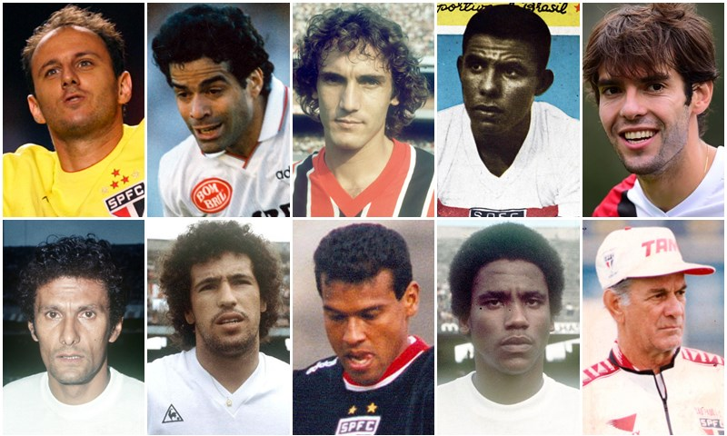

🏆 Títulos de Destaque
O Tricolor Paulista acumula uma impressionante coleção de títulos:
- Mundial de Clubes da FIFA: 3 títulos (1992, 1993 e 2005)
- Copa Libertadores da América: 3 títulos (1992, 1993 e 2005)
- Campeonato Brasileiro: 6 títulos (1977, 1986, 1991, 2006, 2007 e 2008)
- Recopa Sul-Americana: 2 títulos (1993 e 1994)
- Supercopa da Libertadores: 1 título (1993)
- Copa Conmebol: 1 título (1994)
- Torneio Rio-São Paulo: 1 título (2001)

Ídolos do São Paulo Futebol Clube
Ao longo de sua história, o São Paulo revelou e acolheu diversos jogadores e treinadores que se tornaram ídolos da torcida, marcando gerações e contribuindo significativamente para as conquistas do clube. Entre eles, destacam-se:
- Rogério Ceni: Considerado o maior ídolo da história do clube, Rogério Ceni atuou como goleiro e artilheiro por mais de 20 anos. Durante sua trajetória, conquistou três Campeonatos Brasileiros, duas Libertadores e dois Mundiais de Clubes, além de se tornar o goleiro com mais gols na história do futebol mundial.
- Telê Santana: Treinador icônico, foi responsável por liderar o São Paulo em uma das maiores sequências de títulos da história do clube, incluindo a Copa Libertadores, o Campeonato Brasileiro e o Mundial de Clubes. Sob seu comando, o São Paulo se tornou referência no futebol internacional.
- Raí: Meia habilidoso, foi um dos principais jogadores do time nas conquistas da Libertadores e do Mundial de 1992. Seu talento e liderança em campo o transformaram em um símbolo do Tricolor Paulista.
- Muricy Ramalho: Como técnico, conquistou o tricampeonato brasileiro de 2006 a 2008, sendo o único treinador a alcançar esse feito consecutivo no clube. Sua identificação com o São Paulo vai além dos títulos, sendo um dos personagens mais respeitados pela torcida.
- Careca: Um dos grandes atacantes da história do clube, brilhou nos gramados na década de 1980 e foi fundamental para o sucesso do São Paulo nesse período.
- Zetti: Goleiro importante nas campanhas vitoriosas das Libertadores e dos Mundiais de 1992 e 1993. Reconhecido pela segurança e por defesas memoráveis em jogos decisivos.
- Leônidas da Silva: Conhecido como "Diamante Negro", foi um dos primeiros grandes ídolos do São Paulo nas décadas de 1940 e 1950. Leônidas é considerado um dos precursores do futebol brasileiro, famoso por popularizar o "gol de bicicleta".
- Müller: Atacante rápido e decisivo, Müller fez parte das grandes conquistas das Libertadores e dos Mundiais, sendo lembrado por marcar gols em momentos importantes.
- Toninho Cerezo: Meio-campista talentoso, foi uma peça fundamental nas conquistas da Libertadores e do Mundial nos anos 1990, com sua visão de jogo e qualidade nos passes.
- Serginho Chulapa: Maior artilheiro da história do São Paulo, conhecido pela raça dentro de campo e pelos gols que marcaram época.